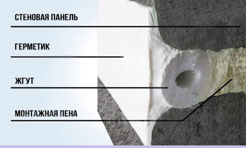

Технология выполнения работ
-
Демонтаж старого заполнения шва
-
Первый слой - монтажная пена, которая проникает во все скрытые полости шва и расширяясь, полностью его заполняет.
-
Второй слой - трубчатый утеплитель "Вилатерм", который является вторым утепляющим слоем.
-
Третий слой - герметизирующий состав, который предотвращает прямое попадание влаги и солнечных лучей в полость шва.
